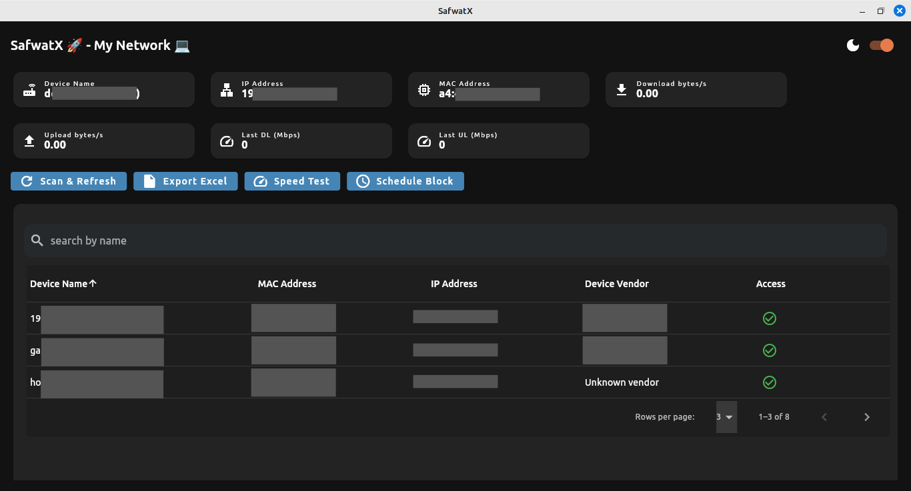
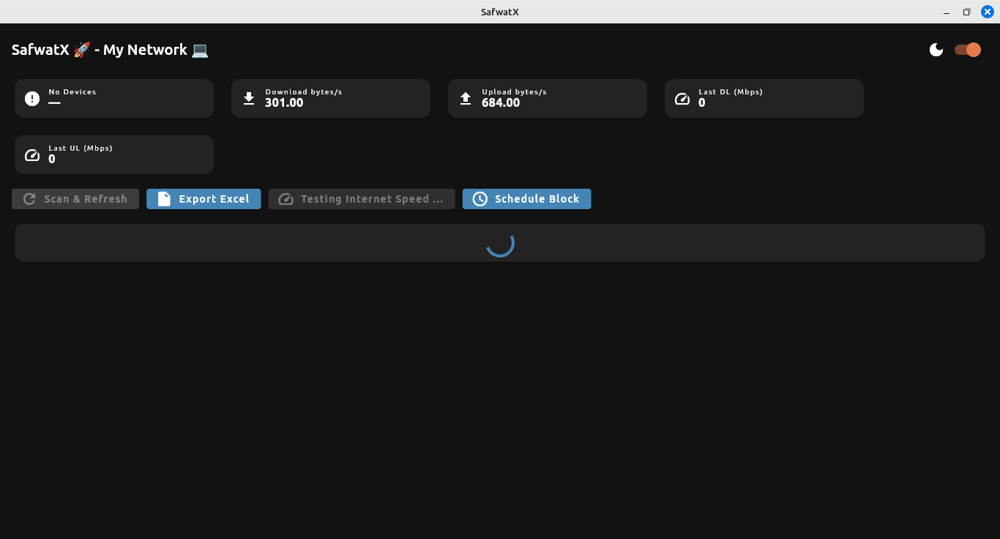

Powerful Features
Network Scanning
Discover all devices on your network with detailed information
Device Control
Block or unblock devices with a single click
Bandwidth Monitoring
tracking of network speeds
Data Export
Export network data for analysis
Application Preview

